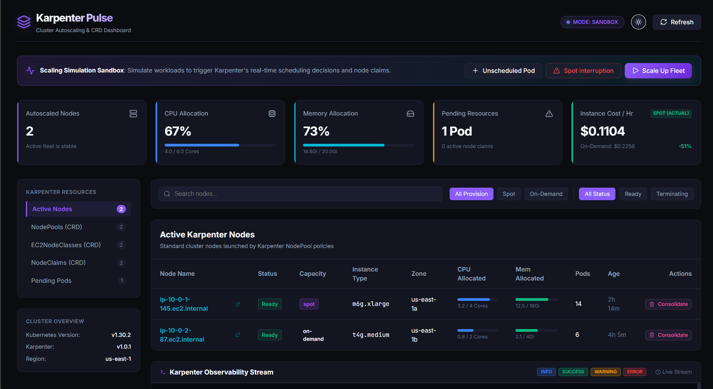
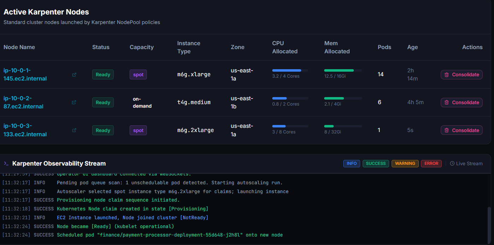
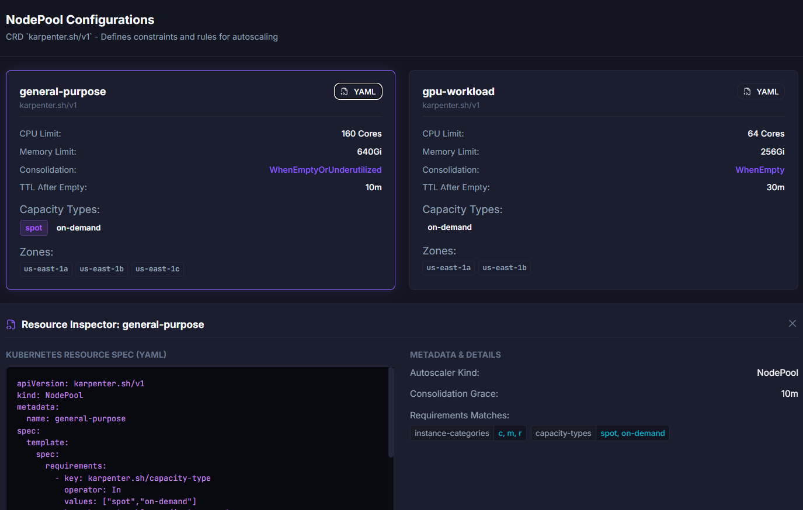
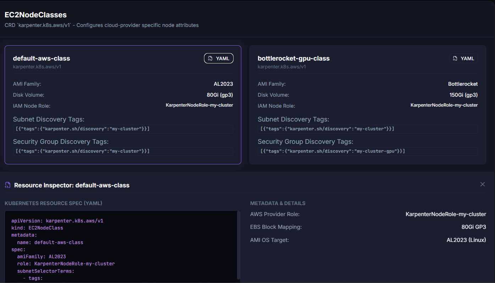

Unified real-time telemetry, NodePool & NodeClaim visualization, Spot lifecycle tracking, and FinOps metrics for Karpenter autoscalers.
Explore the interactive visualization engine built for Karpenter autoscaling and Kubernetes operations:

Instant visibility across all Karpenter-provisioned nodes, CPU and memory utilization gauges, unschedulable pod alerts, and active Spot instance cost optimization tracking.

Simulate unscheduled pod pressure, trigger simulated Spot 2-minute interruption warnings, test fleet scale-up decisions, and monitor live WebSocket-streamed Karpenter controller logs.

Inspect autoscaling constraints, limits, disruption rules, consolidation timeouts (WhenEmptyOrUnderutilized), supported instance categories, and raw Kubernetes CRD manifests.

Visualize AWS EC2NodeClasses, AMI families (AL2023, Bottlerocket), storage volumes, IAM role associations, and dynamic subnet/security-group discovery selectors.
Choose your preferred Kubernetes deployment pattern below:
# 1. Add Karpenter Pulse repository helm repo add karpenter-pulse https://karpenter-pulse.kurigor.com/ helm repo update # 2. Install unified chart into 'karpenter-pulse' namespace helm upgrade --install karpenter-pulse karpenter-pulse/karpenter-pulse \ --namespace karpenter-pulse \ --create-namespace
# Direct OCI installation from Google Artifact Registry helm upgrade --install karpenter-pulse \ oci://europe-north1-docker.pkg.dev/karpenter-pulse/karpenter-pulse/karpenter-pulse \ --version 1.0.0 \ --namespace karpenter-pulse \ --create-namespace
# ArgoCD Application Manifest apiVersion: argoproj.io/v1alpha1 kind: Application metadata: name: karpenter-pulse namespace: argocd spec: project: default source: repoURL: https://karpenter-pulse.kurigor.com/ chart: karpenter-pulse targetRevision: 1.0.0 destination: server: https://kubernetes.default.svc namespace: karpenter-pulse syncPolicy: automated: prune: true selfHeal: true
# Forward the Web UI service port to localhost kubectl port-forward svc/karpenter-pulse-web 8080:80 -n karpenter-pulse # Open your browser at http://localhost:8080
Karpenter Pulse packages clean separation of concerns into a unified Helm deployment:
Real-time Kubernetes informers querying Karpenter CRDs (NodePools, NodeClaims, EC2NodeClasses) and AWS pricing intelligence.
Responsive, reactive visualization dashboard built with React 19, TypeScript, Recharts, and automated API reverse-proxying.
Common values to customize for production deployments:
| Parameter | Description | Default |
|---|---|---|
| backend.config.awsRegion | AWS Region for EC2 pricing and SQS queues | "us-east-1" |
| backend.config.clusterName | Target EKS / Kubernetes cluster identifier | "my-cluster" |
| backend.config.karpenterNamespace | Namespace where Karpenter controllers run | "karpenter" |
| backend.rbac.create | Automatically bind read permissions for CRDs | true |
| frontend.ingress.enabled | Expose React UI through an Ingress controller | false |
| backend.resources.limits.memory | Go backend container memory limit | 256Mi |